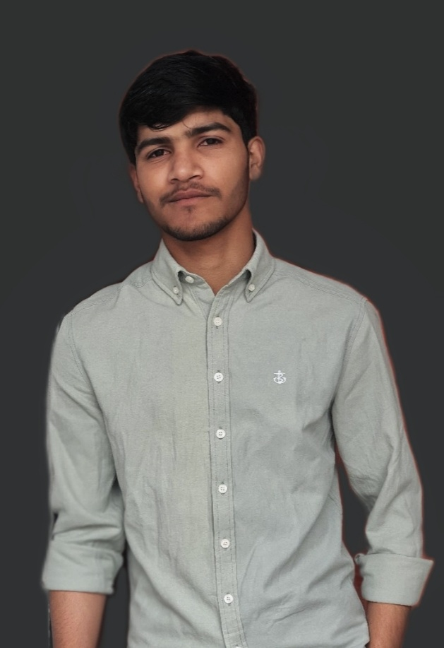
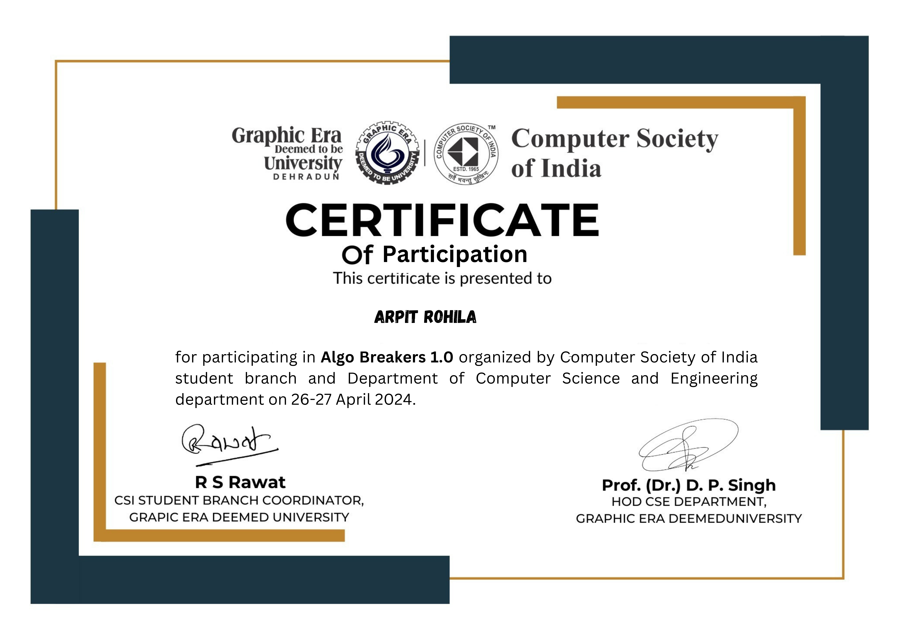
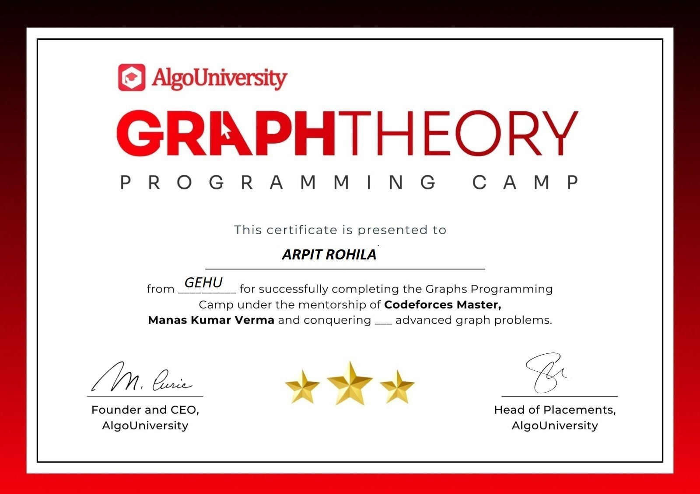
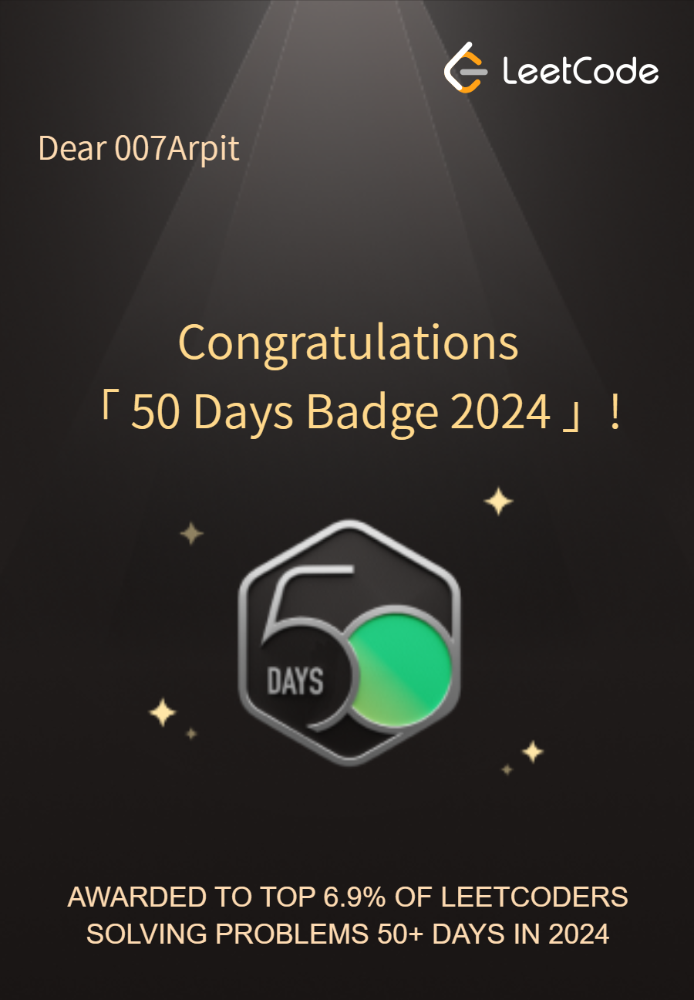
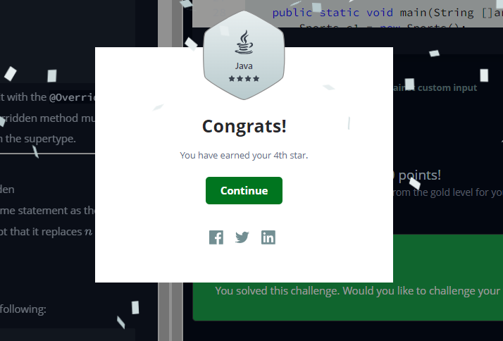

About Me
Skills
Experience
Education
My Top Skills
Preisce Writing on 7-Habbits of Highly Effictive People's
Habbit 1 : Be Proactive
Be Proactive is about taking responsibility for your life. Proactive people recognize that they are “response-able.” They don’t blame circumstances, conditions, or conditioning for their behavior. They know they can choose their behavior. Reactive people, on the other hand, are often affected by their physical environment. They find external sources to blame for their behavior. If the weather is good, they feel good. If it isn’t, it affects their attitude and performance, and they blame the weather. All these external forces act as stimuli that we respond to. Between the stimulus and the response is our greatest power—we have the freedom to choose our response. One of the most important things we choose is what we say. Our language is a good indicator of how we see ourselves. A proactive person uses proactive language—I can, I will, I prefer, etc. A reactive person uses reactive language—I can’t, I have to, if only. Reactive people believe they are not responsible for what they say and do—they have no choice. Proactive people focus their efforts on their Circle of Influence®. They work on the things they can do something about: health, children, or problems at work. Reactive people focus their efforts in the Circle of Concern™—things over which they have little or no control: the national debt, terrorism, or the weather. Gaining an awareness of the areas in which we expend our energies is a giant step in becoming proactive...
Habbit 2 : Begain with the end in mind
Begin With the End in Mind is based on imagination—the ability to envision in your mind what you cannot at present see with your eyes. It is based on the principle that all things are created twice. There is a mental (first) creation, and a physical (second) creation. The physical creation follows the mental, just as a building follows a blueprint. If you don’t make a conscious effort to visualize who you are and what you want in life, then you empower other people and circumstances to shape you and your life by default. It’s about connecting again with your uniqueness and then defining the personal, moral, and ethical guidelines within which you can most happily express and fulfill yourself. One of the best ways to incorporate Habit 2 into your life is to develop a Personal Mission Statement. It focuses on what you want to be and do. It is your plan for success. It reaffirms who you are, puts your goals in focus, and moves your ideas into the real world. Your mission statement makes you the leader of your own life. You create your destiny and secure the future you envision.
Habit 3: Put First Things First
Put First Things First is the exercise of independent will toward becoming principle-centered. Habit 3 is the practical fulfillment of Habits 1 and 2. Habit 1 says, “You are the creator. You are in charge.” Habit 2 is the first mental creation, based on imagination, the ability to envision what you can become. Habit 3 is the second creation, the physical creation. This habit is where Habits 1 and 2 come together. It happens day in and day out, moment-by-moment. It deals with many of the questions addressed around time management. But that’s not all; habit 3 is about life management as well—your purpose, values, roles, and priorities. What are “first things?” First things are those things you find of most worth. If you put first things first, you are organizing and managing time and events according to the personal priorities you established in Habit 2.
Habbit 4 : Think Win-Win
Think Win-Win isn’t about being nice, nor is it a quick-fix technique. It is a character-based code for human interaction and collaboration. Most of us learn to base our self-worth on comparisons and competition. We think about succeeding in terms of someone else failing—if I win, you lose; or if you win, I lose. Life becomes a zero-sum game. There is only so much pie to go around, and if you get a big piece, there is less for me; it’s not fair, and I’m going to make sure you don’t get anymore. We all play the game, but how much fun is it really? Win-win sees life as a cooperative arena, not a competitive one. Win-win is a frame of mind and heart that constantly seeks mutual benefit in all human interactions. Win-win means agreements or solutions are mutually beneficial and satisfying. We both get to eat the pie, and it tastes pretty darn good! To go for win-win, you not only have to be empathic, but you also have to be confident. You not only have to be considerate and sensitive, but you also have to be brave. That balance between courage and consideration is the essence of real maturity and is fundamental to win-win.
Habit 5: Seek First to Understand, Then to Be Understood
Communication is the most important skill in life. You spend years learning how to read, write, and speak. But what about listening? What training have you had that enables you to listen so you really, deeply understand another human being? Probably none, right? If you’re like most people, you probably seek first to be understood; you want to get your point across. In doing so, you may ignore the other person completely, pretend that you’re listening, selectively hear only certain parts of the conversation or attentively focus on only the words being said, but miss the meaning entirely. So why does this happen? Because most people listen with the intent to reply, not to understand. You listen to yourself as you prepare in your mind what you are going to say, the questions you are going to ask, etc. You filter everything you hear through your life experiences, your frame of reference. You check what you hear against your autobiography and see how it measures up. Consequently, you decide prematurely what the other person means before they finish communicating. Do any of the following sound familiar? You might be saying, “Hey, wait a minute. I’m just trying to relate to the person by drawing on my own experiences. Is that so bad?” In some situations, autobiographical responses may be appropriate, such as when another person specifically asks for help from your point of view or when there is already a very high level of trust in the relationship.
Habit 6: Synergize
To put it simply, synergy means “two heads are better than one.” Synergize is the habit of creative cooperation. It is teamwork, open-mindedness, and the adventure of finding new solutions to old problems. But it doesn’t happen on its own. It’s a process, and through that process, people bring all their personal experience and expertise to the table. Together, they can produce far better results than they could individually. Synergy lets us discover jointly things we are much less likely to discover by ourselves. It is the idea that the whole is greater than the sum of the parts. One plus one equals three, or six, or sixty—you name it. When people begin to interact together genuinely, and they’re open to each other’s influence, they begin to gain new insight. The capability of inventing new approaches is increased exponentially because of differences. Valuing differences is what really drives synergy. Do you truly value the mental, emotional, and psychological differences among people? Or do you wish everyone would just agree with you so you could all get along? Many people mistake uniformity for unity and sameness for oneness. One word—boring! Differences should be seen as strengths, not weaknesses. They add zest to life.
Habit 7: Sharpen the Saw
Sharpen the Saw means preserving and enhancing the greatest asset you have—you. It means having a balanced program for self-renewal in the four areas of your life: physical, social/emotional, mental, and spiritual. As you renew yourself in each of the four areas, you create growth and change in your life. Sharpen the Saw keeps you fresh so you can continue to practice the other six habits. You increase your capacity to produce and handle the challenges around you. Without this renewal, the body becomes weak, the mind mechanical, the emotions raw, the spirit insensitive, and the person selfish. Not a pretty picture, is it? You can pamper yourself mentally and spiritually. Or you can go through life oblivious to your well-being. You can experience vibrant energy. Or you can procrastinate and miss out on the benefits of good health and exercise. You can revitalize yourself and face a new day in peace and harmony. Or you can wake up in the morning full of apathy because your get-up-and-go has got-up-and-gone. Every day provides a new opportunity for renewal—a new opportunity to recharge yourself instead of hitting the wall. All it takes is the desire, knowledge, and skill.
Achievement's
Certificate of Participaton in Algo breaker on
26-may-2024

Certificate of Compleating the
Graph's Programing camp

50 Day's Consistence Coding badge on
Leet-coad

Got 4 star in Java programing language on
Hacker-Rank
